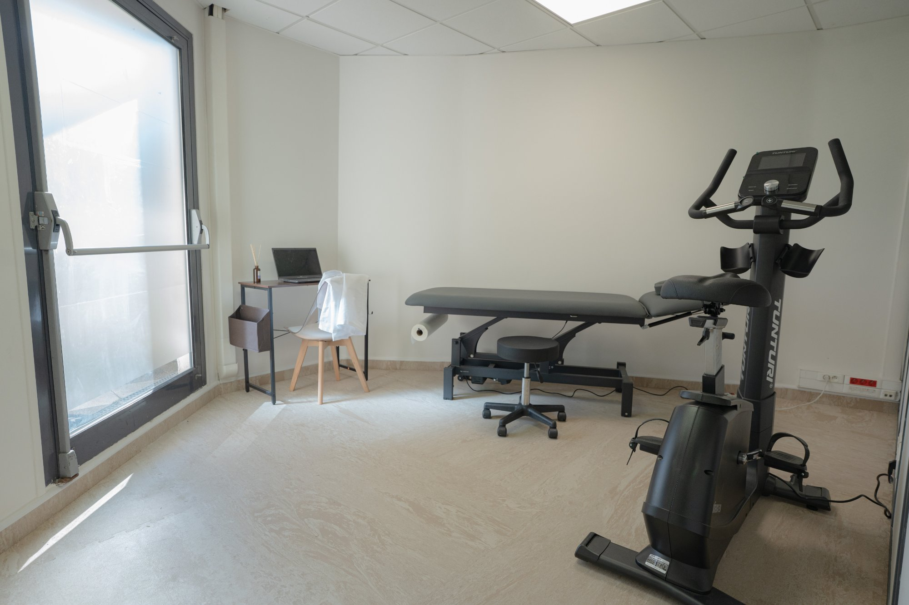

Rééducationpost-opératoire
Après une opération, la kinésithérapie est indispensable pour récupérer pleinement. Le cabinet Viluma à Boulogne-Billancourt vous accompagne dès les premières séances jusqu'au retour à la vie normale.
Prendre rendez-vous
Après l'opération
La rééducation, c'est 50% du résultat chirurgical
Une chirurgie bien réalisée ne suffit pas — c'est la rééducation qui détermine la qualité de la récupération fonctionnelle. Commencer tôt, avec un protocole adapté à votre chirurgie, fait toute la différence.
- Prothèse totale de hanche (PTH) et de genou (PTG)
- Ligamentoplastie du genou (LCA, LCP)
- Chirurgie de l'épaule (coiffe des rotateurs, instabilité)
- Chirurgie du rachis (hernie discale, arthrodèse)
- Fractures opérées (membres supérieurs et inférieurs)
- Chirurgie de la main et du poignet
Sur prescription chirurgicale
Nous travaillons en lien avec votre chirurgien pour respecter les protocoles et délais de reprise de charge. Amenez votre compte-rendu opératoire à votre première séance.
Notre protocole
4 phases pour une récupération complète
1
Phase inflammatoire
Anti-douleur, drainage, mobilisations douces, prévention des complications.
2
Récupération articulaire
Restauration progressive de la mobilité, travail de la cicatrice.
3
Renforcement musculaire
Travail actif sur plateau technique, reprise de la mise en charge progressive.
4
Retour à la vie normale
Tests fonctionnels, validation de la reprise sportive ou professionnelle.